3.5. Gaussian Processes¶
Gaussian Processes for Machine Learning (GPML) is a generic supervised learning method primarily designed to solve regression problems. It has also been extended to probabilistic classification, but in the present implementation, this is only a post-processing of the regression exercise.
The advantages of Gaussian Processes for Machine Learning are:
- The prediction interpolates the observations (at least for regular correlation models).
- The prediction is probabilistic (Gaussian) so that one can compute empirical confidence intervals and exceedence probabilities that might be used to refit (online fitting, adaptive fitting) the prediction in some region of interest.
- Versatile: different linear regression models and correlation models can be specified. Common models are provided, but it is also possible to specify custom models provided they are stationary.
The disadvantages of Gaussian Processes for Machine Learning include:
- It is not sparse. It uses the whole samples/features information to perform the prediction.
- It loses efficiency in high dimensional spaces – namely when the number of features exceeds a few dozens. It might indeed give poor performance and it loses computational efficiency.
- Classification is only a post-processing, meaning that one first need to solve a regression problem by providing the complete scalar float precision output
of the experiment one attempt to model.
Thanks to the Gaussian property of the prediction, it has been given varied applications: e.g. for global optimization, probabilistic classification.
3.5.1. Examples¶
3.5.1.1. An introductory regression example¶
Say we want to surrogate the function 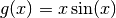. To do so, the function is evaluated onto a design of experiments. Then, we define a GaussianProcess model whose regression and correlation models might be specified using additional kwargs, and ask for the model to be fitted to the data. Depending on the number of parameters provided at instantiation, the fitting procedure may recourse to maximum likelihood estimation for the parameters or alternatively it uses the given parameters.
>>> import numpy as np
>>> from sklearn import gaussian_process
>>> def f(x):
... return x * np.sin(x)
>>> X = np.atleast_2d([1., 3., 5., 6., 7., 8.]).T
>>> y = f(X).ravel()
>>> x = np.atleast_2d(np.linspace(0, 10, 1000)).T
>>> gp = gaussian_process.GaussianProcess(theta0=1e-2, thetaL=1e-4, thetaU=1e-1)
>>> gp.fit(X, y)
GaussianProcess(beta0=None, corr=<function squared_exponential at 0x...>,
normalize=True, nugget=array(2.22...-15),
optimizer='fmin_cobyla', random_start=1, random_state=...
regr=<function constant at 0x...>, storage_mode='full',
theta0=array([[ 0.01]]), thetaL=array([[ 0.0001]]),
thetaU=array([[ 0.1]]), verbose=False)
>>> y_pred, sigma2_pred = gp.predict(x, eval_MSE=True)
3.5.1.2. Fitting Noisy Data¶
When the data to be fit includes noise, the Gaussian process model can be used by specifying the variance of the noise for each point. GaussianProcess takes a parameter nugget which is added to the diagonal of the correlation matrix between training points: in general this is a type of Tikhonov regularization. In the special case of a squared-exponential correlation function, this normalization is equivalent to specifying a fractional variance in the input. That is
![\mathrm{nugget}_i = \left[\frac{\sigma_i}{y_i}\right]^2](../_images/math/d86eb248abab6a0308eb6d723ef6d1a1ae089dac.png)
With nugget and corr properly set, Gaussian Processes can be used to robustly recover an underlying function from noisy data:
3.5.2. Mathematical formulation¶
3.5.2.1. The initial assumption¶
Suppose one wants to model the output of a computer experiment, say a mathematical function:
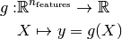
GPML starts with the assumption that this function is a conditional sample path of a Gaussian process 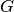 which is additionally assumed to read as follows:
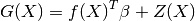
where 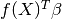 is a linear regression model and 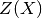 is a zero-mean Gaussian process with a fully stationary covariance function:
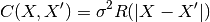
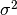 being its variance and  being the correlation
function which solely depends on the absolute relative distance between each
sample, possibly featurewise (this is the stationarity assumption).
being the correlation
function which solely depends on the absolute relative distance between each
sample, possibly featurewise (this is the stationarity assumption).
From this basic formulation, note that GPML is nothing but an extension of a basic least squares linear regression problem:
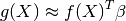
Except we additionally assume some spatial coherence (correlation) between the samples dictated by the correlation function. Indeed, ordinary least squares assumes the correlation model 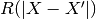 is one when 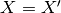 and zero otherwise : a dirac correlation model – sometimes referred to as a nugget correlation model in the kriging literature.
3.5.2.2. The best linear unbiased prediction (BLUP)¶
We now derive the best linear unbiased prediction of the sample path
 conditioned on the observations:
conditioned on the observations:
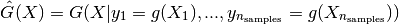
It is derived from its given properties:
- It is linear (a linear combination of the observations)
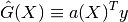
- It is unbiased
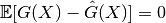
- It is the best (in the Mean Squared Error sense)
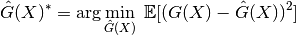
So that the optimal weight vector 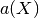 is solution of the following equality constrained optimization problem:
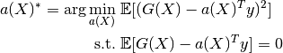
Rewriting this constrained optimization problem in the form of a Lagrangian and looking further for the first order optimality conditions to be satisfied, one ends up with a closed form expression for the sought predictor – see references for the complete proof.
In the end, the BLUP is shown to be a Gaussian random variate with mean:
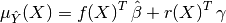
and variance:
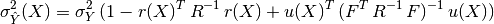
where we have introduced:
- the correlation matrix whose terms are defined wrt the autocorrelation
function and its built-in parameters
 :
:
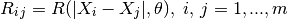
- the vector of cross-correlations between the point where the prediction is made and the points in the DOE:
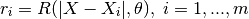
- the regression matrix (eg the Vandermonde matrix if
 is a polynomial
basis):
is a polynomial
basis):
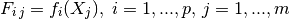
- the generalized least square regression weights:
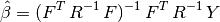
- and the vectors:
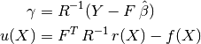
It is important to notice that the probabilistic response of a Gaussian Process predictor is fully analytic and mostly relies on basic linear algebra operations. More precisely the mean prediction is the sum of two simple linear combinations (dot products), and the variance requires two matrix inversions, but the correlation matrix can be decomposed only once using a Cholesky decomposition algorithm.
3.5.2.3. The empirical best linear unbiased predictor (EBLUP)¶
Until now, both the autocorrelation and regression models were assumed given. In practice however they are never known in advance so that one has to make (motivated) empirical choices for these models Correlation Models.
Provided these choices are made, one should estimate the remaining unknown parameters involved in the BLUP. To do so, one uses the set of provided observations in conjunction with some inference technique. The present implementation, which is based on the DACE’s Matlab toolbox uses the maximum likelihood estimation technique – see DACE manual in references for the complete equations. This maximum likelihood estimation problem is turned into a global optimization problem onto the autocorrelation parameters. In the present implementation, this global optimization is solved by means of the fmin_cobyla optimization function from scipy.optimize. In the case of anisotropy however, we provide an implementation of Welch’s componentwise optimization algorithm – see references.
For a more comprehensive description of the theoretical aspects of Gaussian Processes for Machine Learning, please refer to the references below:
References:
- DACE, A Matlab Kriging Toolbox S Lophaven, HB Nielsen, J Sondergaard 2002
- Screening, predicting, and computer experiments WJ Welch, RJ Buck, J Sacks, HP Wynn, TJ Mitchell, and MD Morris Technometrics 34(1) 15–25, 1992
- Gaussian Processes for Machine Learning CE Rasmussen, CKI Williams MIT Press, 2006 (Ed. T Diettrich)
- The design and analysis of computer experiments TJ Santner, BJ Williams, W Notz Springer, 2003
3.5.3. Correlation Models¶
Common correlation models matches some famous SVM’s kernels because they are mostly built on equivalent assumptions. They must fulfill Mercer’s conditions and should additionally remain stationary. Note however, that the choice of the correlation model should be made in agreement with the known properties of the original experiment from which the observations come. For instance:
- If the original experiment is known to be infinitely differentiable (smooth), then one should use the squared-exponential correlation model.
- If it’s not, then one should rather use the exponential correlation model.
- Note also that there exists a correlation model that takes the degree of derivability as input: this is the Matern correlation model, but it’s not implemented here (TODO).
For a more detailed discussion on the selection of appropriate correlation models, see the book by Rasmussen & Williams in references.
3.5.4. Regression Models¶
Common linear regression models involve zero- (constant), first- and second-order polynomials. But one may specify its own in the form of a Python function that takes the features X as input and that returns a vector containing the values of the functional set. The only constraint is that the number of functions must not exceed the number of available observations so that the underlying regression problem is not underdetermined.
3.5.5. Implementation details¶
The present implementation is based on a translation of the DACE Matlab toolbox.
References:
- DACE, A Matlab Kriging Toolbox S Lophaven, HB Nielsen, J Sondergaard 2002,
- W.J. Welch, R.J. Buck, J. Sacks, H.P. Wynn, T.J. Mitchell, and M.D. Morris (1992). Screening, predicting, and computer experiments. Technometrics, 34(1) 15–25.